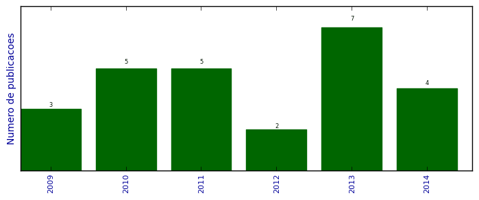

UFSM - Análise do Lattes
Artigos completos publicados em periódicos

Número total de itens: 26
(A1: 0, A2: 0, B1: 5, B2: 0, B3: 0, B4: 0, B5: 0, C: 0, Qualis não identificado: 21)
Legenda Qualis:
- Publicação para a qual o nome exato do Qualis foi identificado: Qualis <estrato>
- Publicação para a qual um nome similar (não exato) do Qualis foi identificado: Qualis <estrato> (nome similar)
- Publicação para a qual nenhum nome do Qualis foi identificado: Qualis não identificado (nome usado na busca)
2014
| 1. | BRAGA, MURIELE P. ; DALCIN, TÁSSIA C. S. ; ROSA, PRISCILA ; CODEVILLA, CRISTIANE F. ; SILVA, CRISTIANE B. DA ; ROLIM, CLARICE M. B. ; ADAMS, ANDRÉA I. H.. ASSAY AND PHOTODEGRADATION KINETICS OF DESONIDE LOTION BY AN LC-UV STABILITY-INDICATING METHOD. Journal of Liquid Chromatography Related Technologies (Print). v. 37, p. 1968-1984, 2014.  [ citações Google Scholar | citações Microsoft Acadêmico | busca Google ] Qualis: Não identificado (Journal of Liquid Chromatography Related Technologies (Print)) |
| 2. | CHRIST, ANA PAULA ; MACHADO, MARIANA SOUTO ; ROSA, PRISCILA ; CODEVILLA, CRISTIANE FRANCO ; BUENO ROLIM, CLARICE MADALENA ; HORN ADAMS, ANDRÉA INÊS. Development and validation of a stability-indication LC-UV method for determination of daptomycin injectable form and kinetic study in alkaline medium. Analytical Methods (Print). v. 6, p. 1242, 2014. [ citações Google Scholar | citações Microsoft Acadêmico | busca Google ] Qualis: Não identificado (Analytical Methods (Print)) |
| 3. | VELASQUEZ, A. A. ; FERRERIA, L. M. ; STANGARLIN, M. F. L. ; SILVA, C. B. ; ROLIM, C.M.B. ; CRUZ, L.. Novel Pullulan/Eudragit S100 blend microparticles for oral delivery of risedronate: formulation, in vitro evaluation and tableting of blend microparticles. Materials Science Engineering. C, Biomimetic Materials, Sensors and Systems (Print). v. 38, p. 212-217, 2014. [ citações Google Scholar | citações Microsoft Acadêmico | busca Google ] Qualis: Não identificado (Materials Science Engineering. C, Biomimetic Materials, Sensors and Systems (Print)) |
| 4. | VELASQUEZ, A. A. ; MATTIAZZI, J. ; FERRERIA, L. M. ; POHLMANN, L. ; SILVA, C. B. ; ROLIM, C.M.B. ; CRUZ, L.. Risedronate-loaded Eudragit S100 microparticles formulated into tablets. Pharmaceutical Development and Technology (Print). v. 19, p. 1-6, 2014. [ citações Google Scholar | citações Microsoft Acadêmico | busca Google ] Qualis: Não identificado (Pharmaceutical Development and Technology (Print)) |
2013
| 1. | CODEVILLA, CRISTIANE ; ROSA, PRISCILA ; STEPPE, Martin ; BERGOLD, ANA MARIA ; ROLIM, CLARICE M. B. ; ADAMS, ANDRÉA INÊS HORN. Development and validation of a stability-indicating micellar electrokinetic chromatography method to assay voriconazole tablets. Analytical Methods (Print). v. 5, p. 5051-5057, 2013. [ citações Google Scholar | citações Microsoft Acadêmico | busca Google ] Qualis: Não identificado (Analytical Methods (Print)) |
| 2. | FLORES, F. C. ; LIMA, J. A. ; RIBEIRO, R. F. ; ALVES, S. H. ; ROLIM, C.M.B. ; BECK, R. C. R. ; SILVA, C. B.. Antifungal Activity of Nanocapsule Suspensions Containing Tea Tree Oil on the Growth of Trichophyton rubrum. Mycopathologia (Dordrecht. Online). v. 175, p. 281-286, 2013. [ citações Google Scholar | citações Microsoft Acadêmico | busca Google ] Qualis: Não identificado (Mycopathologia (Dordrecht. Online)) |
| 3. | MARCOLINO, ANA ISA PEDROSO ; SANGOI, MAXIMILIANO ; STEPPE, Martin ; ADAMS, ANDRÉA INÊS HORN ; ROLIM, CLARICE M. B.. Determination of dronedarone in pharmaceutical dosage form by stability-indicating micellar electrokinetic chromatography method. Analytical Methods (Print). v. 5, p. 3106-3113, 2013. [ citações Google Scholar | citações Microsoft Acadêmico | busca Google ] Qualis: Não identificado (Analytical Methods (Print)) |
| 4. | RUBIM, A. M. ; RUBENICK2, J. B. ; LAPORTA, L. V. ; ROLIM, C.M.B.. A simple method for the quantification of diclofenac potassium in oral suspension by high-performance liquid chromatography with UV-detection. Brazilian Journal of Pharmaceutical Sciences (Impresso). v. 49, p. 589-597, 2013. [ citações Google Scholar | citações Microsoft Acadêmico | busca Google ] Qualis: Não identificado (Brazilian Journal of Pharmaceutical Sciences (Impresso)) |
| 5. | SANGOI, Maximiliano da Silva ; WRASSE-SANGOI, M. ; HURTADO, F. K. ; ROLIM, Clarice Madalena Bueno. Stress degradation studies on aliskiren and the development of a sensitive stability-indicating MEKC method. Acta Chromatographica. v. 1, p. 1-14, 2013. [ citações Google Scholar | citações Microsoft Acadêmico | busca Google ] Qualis: B1 |
| 6. | SANTA, F. D. ; SPEROTTO, L. E. ; BRAGA, M. P. ; DALCIN, T. C. S. ; CODEVILLA, C. F. ; MENEGHINI, L. Z. ; DONATO, E. M. ; ROLIM, C ; BERGOLD, A. M. ; ADAMS, A. I. H.. Development and validation of a simple stability-indicating LC-method and UVA photostability study of desonide hair lotion. Current Analytical Chemistry. v. 49, p. 1-8, 2013. [ citações Google Scholar | citações Microsoft Acadêmico | busca Google ] Qualis: Não identificado (Current Analytical Chemistry) |
| 7. | SILVA, C. V. ; FERREIRA, M. ; ROMERO, C. S. ; BORTOLUZZI, M. R. ; LIMA, F. O. ; ROLIM, C.M.B. ; CARVALHO, L. M.. A capillary zone electrophoretic method for the determination of hypoglycemics as adulterants in herbal formulations used for the treatment of diabetes. Analytical Methods (Print). v. 5, p. 2126-2133, 2013. [ citações Google Scholar | citações Microsoft Acadêmico | busca Google ] Qualis: Não identificado (Analytical Methods (Print)) |
2012
| 1. | HURTADO, F. K. ; RAVANELLO, A. ; TORRES, B. G. S. ; SOUTO, G. D. ; BECK, R. C. R. ; ROLIM, C. Development of a Discriminating In Vitro Dissolution Method for the Poorly Soluble Drug Rimonabant: Effect of Formulation Variables on Dosage Form Release Profiles. Dissolution Technologies. v. 19, p. 30-36, 2012. [ citações Google Scholar | citações Microsoft Acadêmico | busca Google ] Qualis: Não identificado (Dissolution Technologies) |
| 2. | RAVANELLO, A. ; DELGADO, L. S. ; MARCOLINO, A. I. P. ; CODEVILLA, C. F. ; ADAMS, A. I. H. ; ROLIM, Clarice Madalena Bueno. A Simple Stability-Indicating LC-UV Method to Assay Sitagliptin Phosphate in Tablets. Current Analytical Chemistry. v. 8, p. 569-573, 2012. [ citações Google Scholar | citações Microsoft Acadêmico | busca Google ] Qualis: Não identificado (Current Analytical Chemistry) |
2011
| 1. | CODEVILLA, C. F. ; LEMOS, A. M. ; DELGADO, L. S. ; ROLIM, Clarice Madalena Bueno ; ADAMS, A. I. H. ; BERGOLD, A. M.. Development and Validation of a Stability-Indicating LC Method for the Assay of Lodenafil Carbonate in Tablets. Journal of Chromatographic Science. v. 49, p. 502-507, 2011. [ citações Google Scholar | citações Microsoft Acadêmico | busca Google ] Qualis: Não identificado (Journal of Chromatographic Science) |
| 2. | FLORES, F. C. ; RIBEIRO, R. F. ; OURIQUE, A. F. ; BECK, R. C. R. ; ROLIM, Clarice Madalena Bueno ; GUTERRES, S. S. ; POHLMANN, A. R. ; SILVA, C. B.. Nanostructured systems containing an essential oil: protection against volatilization. Química Nova (Impresso). v. 34, p. 968-972, 2011. [ citações Google Scholar | citações Microsoft Acadêmico | busca Google ] Qualis: B1 |
| 3. | SANGOI, M.S. ; WRASSE-SANGOI, M. ; OLIVEIRA, P.R. ; ROLIM, C.M.B. ; STEPPE, M.. Simultaneous determination of aliskiren and hydrochlorothiazide from their pharmaceutical preparations using a validated stability-indicating MEKC method. Journal of Separation Science (Print). v. 34, p. 1859-1866, 2011. [ citações Google Scholar | citações Microsoft Acadêmico | busca Google ] Qualis: Não identificado (Journal of Separation Science (Print)) |
| 4. | SANGOI, Maximiliano da Silva ; Wrasse-Sangoi, Micheli ; de Oliveira, Paulo Renato ; Todeschini, Vítor ; ROLIM, Clarice Madalena Bueno. RAPID SIMULTANEOUS DETERMINATION OF ALISKIREN AND HYDROCHLOROTHIAZIDE FROM THEIR PHARMACEUTICAL FORMULATIONS BY MONOLITHIC SILICA HPLC COLUMN EMPLOYING EXPERIMENTAL DESIGNS. Journal of Liquid Chromatography Related Technologies (Print). v. 34, p. 1976-1996, 2011. [ citações Google Scholar | citações Microsoft Acadêmico | busca Google ] Qualis: Não identificado (Journal of Liquid Chromatography Related Technologies (Print)) |
| 5. | WRASSE-SANGOI, M. ; SANGOI, Maximiliano da Silva ; OLIVEIRA, Paulo Renato ; SECRETTI, L. T. ; ROLIM, Clarice Madalena Bueno. Determination of Aliskiren in Tablet Dosage Forms by a Validated Stability-indicating RP-LC Method. Journal of Chromatographic Science. v. 49, p. 170-175, 2011. [ citações Google Scholar | citações Microsoft Acadêmico | busca Google ] Qualis: Não identificado (Journal of Chromatographic Science) |
2010
| 1. | Fontana, Márcia Camponogara ; Hurtado, Felipe Kellermann ; WRASSE, Micheli ; Boligon, Aline Augusti ; Venturini, Tarcieli Pozzebon ; ROLIM, Clarice Madalena Bueno ; Beck, Ruy Carlos Ruver. Development and validation of RP-LC and uv spectrophotometric methods to assay bromopride in oral and injectable solutions. Química Nova (Impresso). v. 33, p. 208-211, 2010. [ citações Google Scholar | citações Microsoft Acadêmico | busca Google ] Qualis: B1 |
| 2. | HURTADO, F. K. ; RAVANELLO, A. ; ZART, M. A. ; WRASSE, Micheli ; DALMORA, Sergio Luiz ; ROLIM, Clarice Madalena Bueno. Validated stability-indicating RP-LC method for the determination of rimonabant in pharmaceutical dosage forms. Journal of AOAC International. v. 93, p. 869-875, 2010. [ citações Google Scholar | citações Microsoft Acadêmico | busca Google ] Qualis: Não identificado (Journal of AOAC International) |
| 3. | MELO, J. ; HURTADO, F. K. ; POITEVIN, F.S. ; FLORES, F. C. ; Zimmermann, E. S. ; DALMORA, Sergio Luiz ; ROLIM, Clarice Madalena Bueno. HPLC determination of bezafibrate in human plasma and its application to pharmacokinetics studies. Journal of Chromatographic Science. v. 48, p. 362-366, 2010. [ citações Google Scholar | citações Microsoft Acadêmico | busca Google ] Qualis: Não identificado (Journal of Chromatographic Science) |
| 4. | RAVANELLO, A. ; SOUTO, G. D. ; HURTADO, F. K. ; MARCOLINO, A. I. P. ; ROLIM, Clarice Madalena Bueno. Development and Validation of an UV-spectrophotometric Method for the Dissolution Studies of Sitagliptin Tablets. Latin American Journal of Pharmacy. v. 29, p. 962-967, 2010. [ citações Google Scholar | citações Microsoft Acadêmico | busca Google ] Qualis: Não identificado (Latin American Journal of Pharmacy) |
| 5. | Wrasse-Sangoi, Micheli ; Secretti, Leonardo Trevisan ; Diefenbach, Isabel Fração ; ROLIM, Clarice Madalena Bueno ; SANGOI, Maximiliano da Silva. Development and validation of an UV spectrophotometric method for the determination of aliskiren in tablets. Química Nova (Impresso). v. 33, p. 1330-1334, 2010. [ citações Google Scholar | citações Microsoft Acadêmico | busca Google ] Qualis: B1 |
2009
| 1. | FRIEDRICH, R. B. ; RAVANELLO, A. ; CICHOTA, L. C. ; ROLIM, C ; BECK, R. C. R.. Validation of a simple and rapid UV spectrophotometric method for dexamethasone assay in tablets. Química Nova (Impresso). v. 32, p. 1052-1054, 2009. [ citações Google Scholar | citações Microsoft Acadêmico | busca Google ] Qualis: B1 |
| 2. | SANGOI, Maximiliano da Silva ; WRASSE, Micheli ; DAVILA, F. B. ; BERNARDI, R. M. ; OLIVEIRA, Paulo Renato ; DALMORA, Sergio Luiz ; ROLIM, Clarice Madalena Bueno. A High-throughput LC-MS/MS Method for the Comparative Determination of Fluticasone Propionate by RP-LC and CE methods in Pharmaceutical Nasal Sprays. European Journal of Mass Spectrometry. v. 15, p. 723-730, 2009. [ citações Google Scholar | citações Microsoft Acadêmico | busca Google ] Qualis: Não identificado (European Journal of Mass Spectrometry) |
| 3. | ZART, M. A. ; CARDOSO, Simone Gançalves ; HURTADO, F. K. ; RAVANELLO, A. ; LANZANOVA, Fibele Analine ; ROLIM, Clarice Madalena Bueno. Development and Validation of a Stability-Indicating LC Method for Determination of Ebastine in Tablet and Syrup. Chromatographia (Wiesbaden). v. 69, p. 195-199, 2009. [ citações Google Scholar | citações Microsoft Acadêmico | busca Google ] Qualis: Não identificado (Chromatographia (Wiesbaden)) |
(*) Relatório criado com produções desde 2009 até HOJE
Data de processamento: 11/04/2014 18:24:55